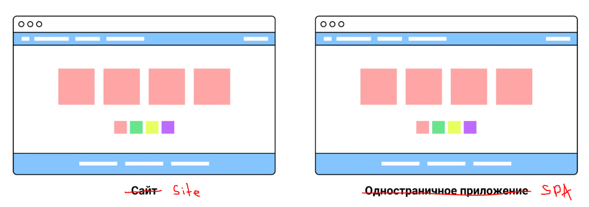
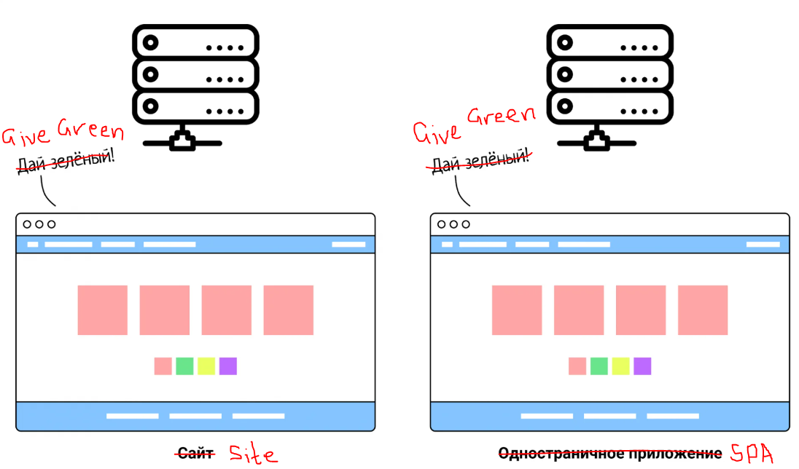
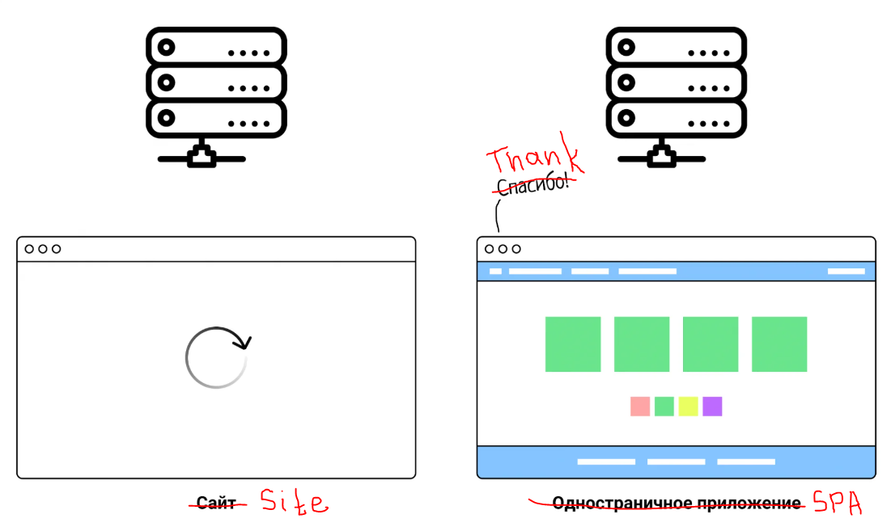
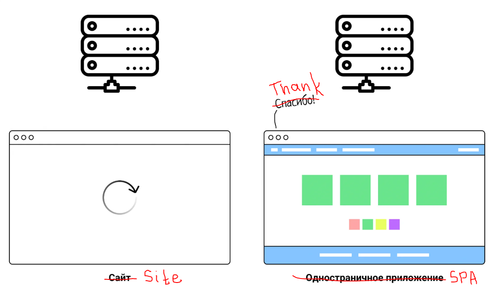
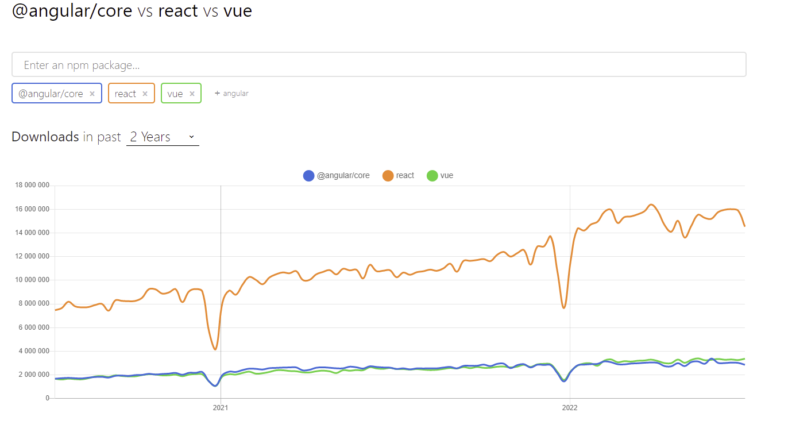

The SPA Presentation
Created by VLADISLAV REUT
Presentation Plan
- What is SPA?
- Architecture SPA
- How works SPA (explain in squares)
- Implementation options SPA
- Advantages and disadvantages
- SPA Development Tools (Frameworks SPA)
- Where is SPA used?
SPA
A Single Page Application (SPA) – is a web application that loads just one HTML page and continually updates its setup without requiring a full page reload when the user switches on.
Architecture
It includes the following main components:
- HTML, CSS и JavaScript
- Client-side
- Routing and navigation
- Components
- State
- AJAX
- Frameworks and libraries
How works SPA
Let's say you have a service where users look at colored squares. The interface has buttons with colors that you can color the shapes with. You have created both a static website and a single-page application for the service:
At first glance, there is no difference between the site and the application. To notice it, click on the button with a different color.
Here it becomes noticeable that the site and the single-page application behave differently:
 

The entire site page will be updated. It turns out that we are telling the server: “Hey, make the squares green.” He says: “Okay. But here you have the site header and footer again, as well as buttons and metadata.” And it returns an entirely new HTML file.
In a single page app, only the color of the squares will update. The browser sends a request to the server, it returns the required parameter, the squares are colored, everything else remains unchanged.
Now imagine that you have not simple squares, but an online store. The user moves from one product to another, but the page does not reload, but dynamically updates the photo, name, description and price. This is how spas work.
IMPLEMENTATION OPTIONS
- Server Side Rendering (SSR): In SSR, the server renders the application in a short time.
- Client Side Rendering (CSR): In CSR, the browser is what runs the show and gets the main data from the server, and the application generates the views and injects them into the DOM.
- Static Site Generators (SSG). With SSG, the server returns well-organized HTML containing a lot of the page's information. This method is the fastest, but if you need to make a change, the process of creating a new page will take some time.
ADVANTAGES
-
Fast and responsive navigation
– SPA loads all the necessary information and resources simultaneously when the page is initially loaded. Then, when moving between sections or modules, the content is displayed instantly without having to refresh the entire page. This allows for fast and smooth navigation between different parts of the application. -
Greater user interactivity
– Using SPA, you can easily implement interactive elements such as dynamically updating data on a page, filtering or sorting information without reloading the page. -
Less load on the server
– SPA loads only the necessary code and resources on initial load, and then operates in an on-demand mode to update data. This reduces the load on the server and reduces the use of network traffic, which is especially important when working with mobile devices or slow Internet connections. -
Easier development and maintenance
– Developers can create a single page application using one programming language - JavaScript, instead of using different technologies for developing the client and server parts. -
Ability to work offline
– SPA saves the last loaded page and data on the user's device.
DISADVANTAGES
-
Large initial download size
– For large and complex applications, this can result in long loading times, especially when using slow Internet connections or mobile devices. -
Limited search engine support
– Since all information on an SPA is displayed on one page, search engines may have difficulty processing and indexing the content. -
RAM consumption
– SPA stores all downloaded resources in RAM on the client device. When working with a large amount of data or using an application for a long time, this can lead to significant memory consumption and slow down the device. -
Safety problems
– Since all application code and data resides on the client side, this makes SPA more susceptible to attacks and possible data leaks.
SPA FRAMEWORKS
There are many frameworks for working with SPA - these are Angular and Vue.js, and Ember.js, and Svelte, but as we can see from the graphics, REACT is the most popular.
WHERE USED?
- Web applications.
- Online stores.
- Social media.
- Multimedia platforms.
- Applications for mobile devices.